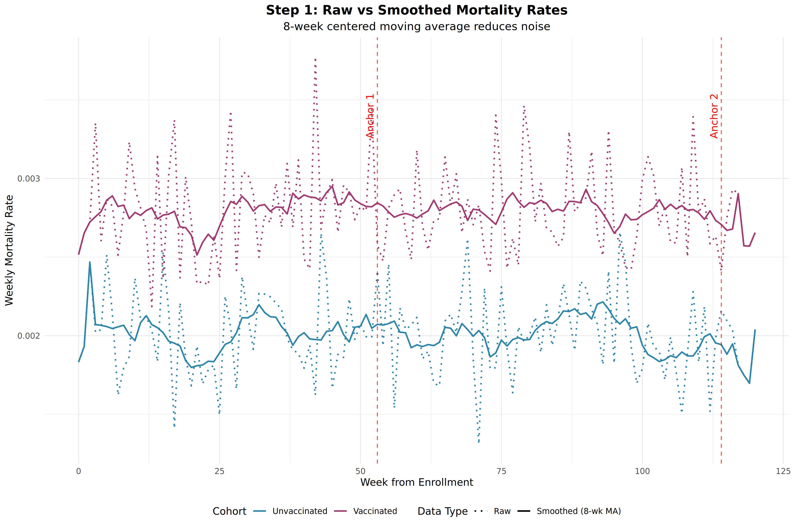
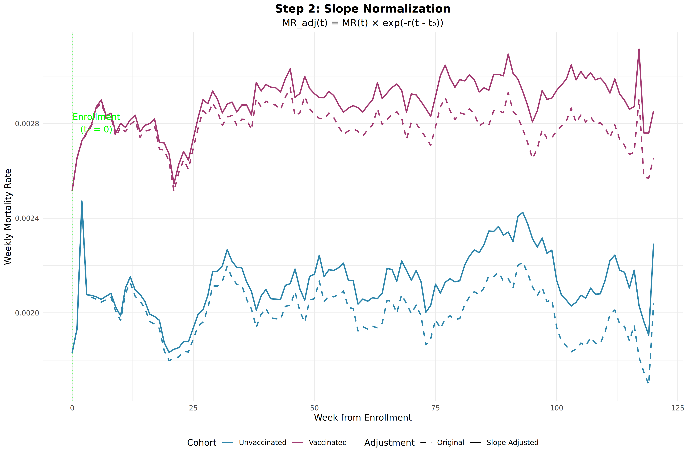
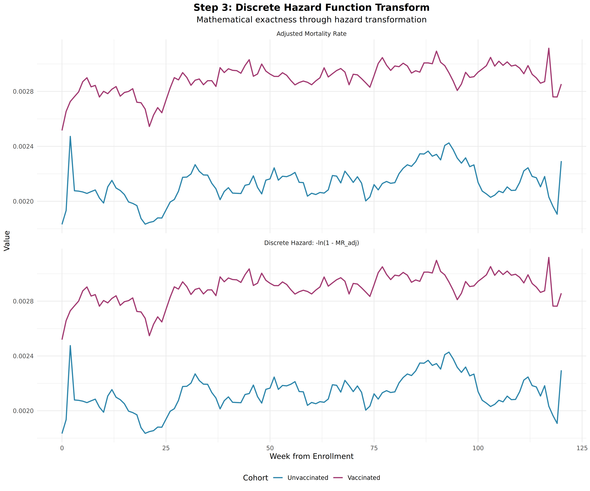
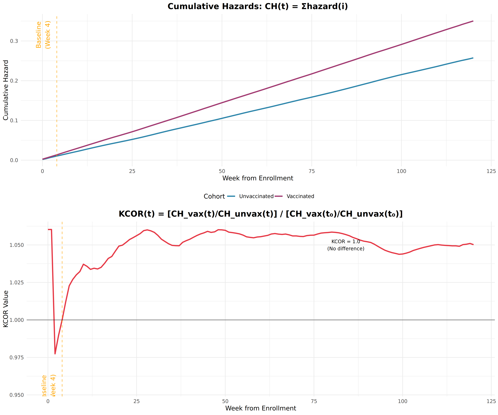
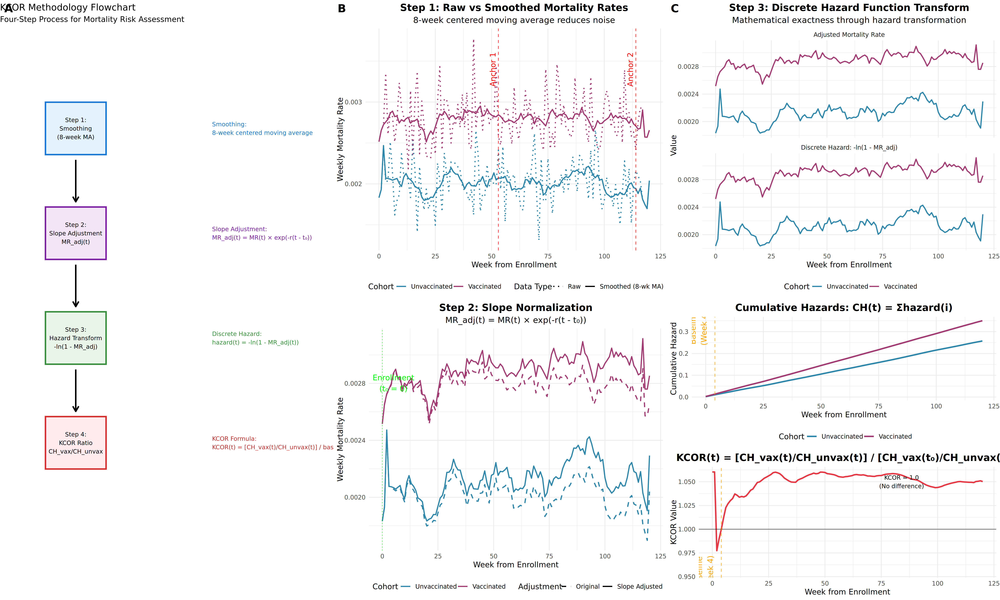

KCOR (Kirsch Cumulative Outcomes Ratio)
Visual Guide
KCOR (Kirsch Cumulative Outcomes Ratio)
Visual Guide
Overview
Overview
KCOR (Kirsch Cumulative Outcomes Ratio) is a statistical method that enables objective analysis of whether a medical intervention (like vaccination) was beneficial or harmful by comparing mortality rates between different cohorts while accounting for underlying mortality trends.
KCOR (Kirsch Cumulative Outcomes Ratio) is a statistical method that enables objective analysis of whether a medical intervention (like vaccination) was beneficial or harmful by comparing mortality rates between different cohorts while accounting for underlying mortality trends.
Flowchart of Method
Method Flowchart

The KCOR method follows a systematic 4-step process:
Smoothing
Apply 8-week centered moving average to reduce noise
Smoothing
Apply 8-week centered moving average to reduce noise
Slope Adjustment
Normalize for baseline mortality trends
Slope Adjustment
Normalize for baseline mortality trends
Hazard Transform
Convert to discrete hazard functions for mathematical exactness
Hazard Transform
Convert to discrete hazard functions for mathematical exactness
KCOR Calculation
Compute ratio of cumulative hazards with baseline normalization
KCOR Calculation
Compute ratio of cumulative hazards with baseline normalization
Step-by-Step Visual Illustration
Step-by-Step Visual Illustration
Step 1: Data Smoothing
Step 1: Data Smoothing
Purpose: Reduce noise in raw mortality data while preserving underlying trends.
Method: 8-week centered moving average is applied to both vaccinated and unvaccinated cohorts.
Purpose: Reduce noise in raw mortality data while preserving underlying trends.
Method: 8-week centered moving average is applied to both vaccinated and unvaccinated cohorts.
Key Features:-
Key Features:
- Raw mortality rates (dotted lines) show significant week-to-week variability
- Smoothed rates (solid lines) reveal underlying patterns
- Raw mortality rates (dotted lines) show significant week-to-week variability
- Anchor points (red dashed lines) are identified for slope calculation during quiet periods
- Smoothed rates (solid lines) reveal underlying patterns
- Anchor points (red dashed lines) are identified for slope calculation during quiet periods
Step 2: Slope Normalization
Step 2: Slope Normalization
Purpose: Adjust for baseline differences in mortality trends between cohorts.
Purpose: Adjust for baseline differences in mortality trends between cohorts.
Formula: MR_adj(t) = MR(t) × exp(-r(t - t₀))Where:
MR_adj(t)= Adjusted mortality rate at time tMR(t)= Original smoothed mortality rateMR_adj(t)= Adjusted mortality rate at time tr= Calculated slope from anchor pointsMR(t)= Original smoothed mortality ratet₀= Enrollment week (t₀ = 0)r= Calculated slope from anchor pointst₀= Enrollment week (t₀ = 0)- Hazard functions provide more accurate representation of instantaneous risk
- Enable precise cumulative hazard calculations
- Hazard functions provide more accurate representation of instantaneous risk
- Account for the fact that people can only die once
- Enable precise cumulative hazard calculations
- Account for the fact that people can only die once
- Ã = Geometric mean of mortality rates around first anchor point
- B̃ = Geometric mean of mortality rates around second anchor point
- Ã = Geometric mean of mortality rates around first anchor point
- Δt = Time difference between anchor points
- B̃ = Geometric mean of mortality rates around second anchor point
- Δt = Time difference between anchor points
- ❌ Assume static baseline rates
- ❌ Don't account for time-varying trends
- ❌ Assume static baseline rates
- ❌ Require complex matching or adjustment
- ❌ Don't account for time-varying trends
- ❌ Vulnerable to confounding and bias
- ❌ Require complex matching or adjustment
- ❌ Vulnerable to confounding and bias
- ✅ Dynamic slope correction for time-varying trends
- ✅ Mathematical exactness through discrete hazard functions
- ✅ Dynamic slope correction for time-varying trends
- ✅ Baseline normalization creates "virtual randomization"
- ✅ Mathematical exactness through discrete hazard functions
- ✅ Works with minimal data: birth, death, vaccination dates
- ✅ Baseline normalization creates "virtual randomization"
- ✅ Objective, unbiased assessment
- ✅ Works with minimal data: birth, death, vaccination dates
- ✅ Objective, unbiased assessment
Where:
Step 3: Discrete Hazard Function Transform
Step 3: Discrete Hazard Function Transform
Purpose: Convert mortality rates to discrete hazard functions for mathematical exactness.
Purpose: Convert mortality rates to discrete hazard functions for mathematical exactness.
Formula: hazard(t) = -ln(1 - MR_adj(t))-
Mathematical Advantage:
Visual Comparison: The plots show both the adjusted mortality rates and their corresponding discrete hazard transformations.
Visual Comparison: The plots show both the adjusted mortality rates and their corresponding discrete hazard transformations.
Step 4: Cumulative Hazards and KCOR
Step 4: Cumulative Hazards and KCOR
Purpose: Calculate the cumulative risk difference between cohorts over time.
Purpose: Calculate the cumulative risk difference between cohorts over time.
Formulas:Formulas:
• KCOR: KCOR(t) = [CH_vax(t)/CH_unvax(t)] / [CH_vax(t₀)/CH_unvax(t₀)] • Cumulative Hazard: CH(t) = Σ hazard(i) for i=0 to t
Baseline Normalization: KCOR is normalized to 1.0 at week 4 (orange dashed line):
Baseline Normalization: KCOR is normalized to 1.0 at week 4 (orange dashed line), so:
No difference between groups
Higher mortality risk in vaccinated group
No difference between groups
Lower mortality risk in vaccinated group
Higher mortality risk in vaccinated group
Lower mortality risk in vaccinated group
Complete Method Illustration
Complete Method Illustration
This comprehensive view shows all four steps of the KCOR method side-by-side, demonstrating how raw mortality data is transformed into the final KCOR risk assessment.
This comprehensive view shows all four steps of the KCOR method side-by-side, demonstrating how raw mortality data is transformed into the final KCOR risk assessment.
Key Mathematical Formulations
Key Mathematical Formulations
1. Slope Calculation (Geometric Mean Method)
The slope is calculated using anchor points during "quiet periods" (minimal differential events):
1. Slope Calculation (Geometric Mean Method)
The slope is calculated using anchor points during "quiet periods" (minimal differential events):
r = (1/Δt) × ln(B̃/Ã)Where:
Where:
2. Slope Adjustment
Mortality rates are adjusted for baseline trends:
2. Slope Adjustment
Mortality rates are adjusted for baseline trends:
MR_adj(t) = MR(t) × exp(-r(t - t₀))3. Discrete Hazard Transform
Conversion to hazard functions for mathematical precision:
3. Discrete Hazard Transform
Conversion to hazard functions for mathematical precision:
hazard(t) = -ln(1 - MR_adj(t))4. KCOR Calculation
Final ratio computation with baseline normalization:
4. KCOR Calculation
Final ratio computation with baseline normalization:
KCOR(t) = [CH_vax(t)/CH_unvax(t)] / [CH_vax(4)/CH_unvax(4)]Statistical Interpretation
Statistical Interpretation
KCOR Values Mean
KCOR Values Mean
No difference in mortality risk between groups
25% higher mortality risk in vaccinated group
No difference in mortality risk between groups
20% lower mortality risk in vaccinated group (protective effect)
25% higher mortality risk in vaccinated group
20% lower mortality risk in vaccinated group (protective effect)
Confidence Intervals
KCOR includes 95% confidence intervals calculated using proper uncertainty propagation:
Confidence Intervals
KCOR includes 95% confidence intervals calculated using proper uncertainty propagation:
Var[ln(KCOR(t))] = Var[CH_vax(t)]/CH_vax(t)² + Var[CH_unvax(t)]/CH_unvax(t)² + baseline termsReal-World Application: Czech Data Results
When applied to the Czech Republic's comprehensive vaccination and mortality dataset, KCOR revealed:
Real-World Application: Czech Data Results
When applied to the Czech Republic's comprehensive vaccination and mortality dataset, KCOR revealed:
| Dose Level | |||||||
|---|---|---|---|---|---|---|---|
| KCOR Value | Dose Level | 95% CI | KCOR Value | Interpretation | 95% CI | Interpretation | |
| 1 vs 0 | |||||||
| 1.052 | 1 vs 0 | [1.022, 1.082] | 1.052 | 5.2% increased mortality risk | [1.022, 1.082] | 5.2% increased mortality risk | |
| 2 vs 0 | |||||||
| 1.258 | 2 vs 0 | [1.232, 1.285] | 1.258 | 25.8% increased mortality risk | [1.232, 1.285] | 25.8% increased mortality risk | |
| 3 vs 0 | |||||||
| 1.549 | 3 vs 0 | [1.518, 1.580] | 1.549 | 54.9% increased mortality risk | [1.518, 1.580] | 54.9% increased mortality risk |
These results demonstrate a dose-dependent accelerating mortality pattern, providing evidence of cumulative vaccine toxicity.
These results demonstrate a dose-dependent accelerating mortality pattern, providing evidence of cumulative vaccine toxicity.
Why KCOR is Superior to Traditional Methods
Why KCOR is Superior to Traditional Methods
Traditional Epidemiological Limitations
Traditional Epidemiological Limitations
KCOR Advantages
KCOR Advantages
Validation and Robustness
The KCOR method has been validated through:
Validation and Robustness
The KCOR method has been validated through:
Conclusion
KCOR provides a robust, mathematically rigorous method for assessing the net benefit or harm of medical interventions using observational data. Its visual method makes the analysis transparent and verifiable, while its statistical foundation ensures accurate risk assessment.
Conclusion
The method's ability to create "virtual randomization" from observational data represents a significant advance in epidemiological method, particularly for answering policy-relevant questions about intervention safety and efficacy.
KCOR provides a robust, mathematically rigorous method for assessing the net benefit or harm of medical interventions using observational data. Its visual method makes the analysis transparent and verifiable, while its statistical foundation ensures accurate risk assessment.
The method's ability to create "virtual randomization" from observational data represents a significant advance in epidemiological method, particularly for answering policy-relevant questions about intervention safety and efficacy.